Fitness UX Process
Problem Statement
The project aimed to design a user-friendly fitness tracking app tailored for people trying to build healthier habits without getting overwhelmed. Many users struggle with inconsistent workout schedules, lack of motivation, and difficulty tracking their progress over time. Existing apps were often cluttered or too focused on expert users. Our goal was to create an app that encourages daily movement, tracks workouts intuitively, and helps users set realistic fitness goals regardless of their fitness level.
Design Thinking
We adopted the design thinking process to solve this challenge creatively and empathetically. This included: Empathizing with users through interviews and surveys, Defining the main obstacles to consistent fitness behavior, Ideating potential solutions through brainstorming, Prototyping interactive screens and user flows, and Testing those prototypes with real users to validate usability. This iterative approach allowed us to stay user-focused throughout the development cycle.
User Research
We conducted surveys and one-on-one interviews with 12 users ranging from beginners to intermediate-level fitness enthusiasts. The research surfaced three common themes: (1) a need for goal-setting based on personal fitness levels, (2) difficulty maintaining motivation without visual progress tracking, and (3) frustration with overwhelming data or features in other apps. Insights from this research shaped the decision to emphasize clean UI, habit-building gamification, and quick-start workouts. We also examined apps like Nike Training Club and FitOn for market comparison.
Low-Fidelity Wireframes
We started by sketching out key screens including the Home Dashboard, Daily Workout Planner, Progress Tracker, and Goal Setting. The focus was on layout and navigation rather than aesthetics. These sketches helped us map out the user journey—from onboarding and setting fitness goals to completing a workout and viewing stats. Wireframes were drawn with pen and paper first, then digitized for collaborative review.
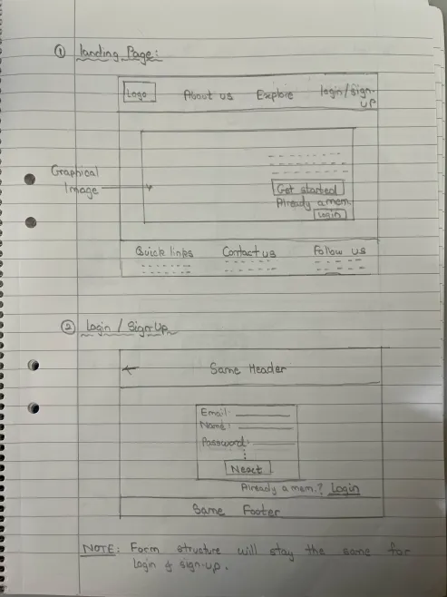
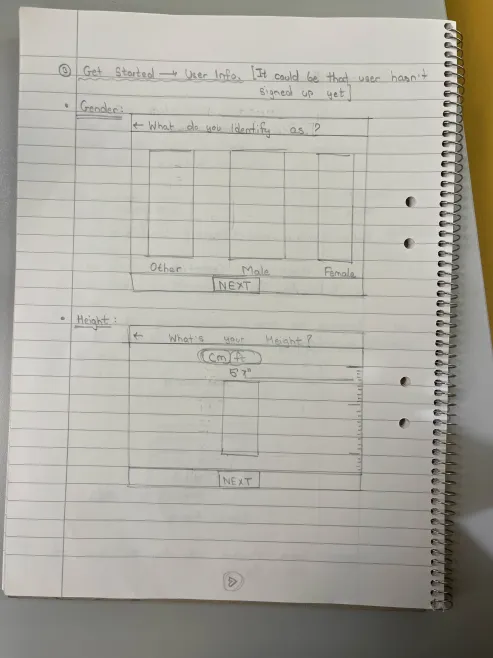
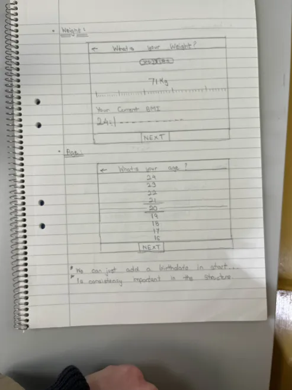
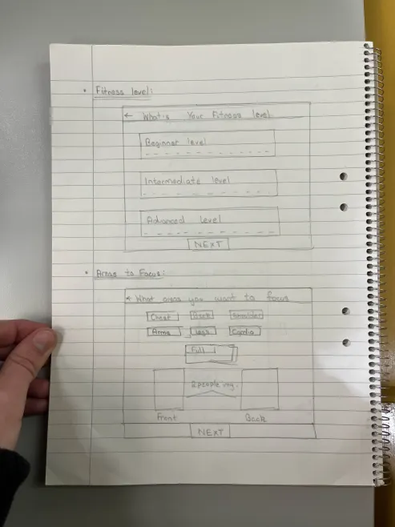
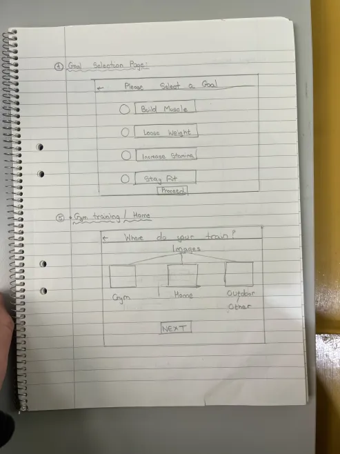
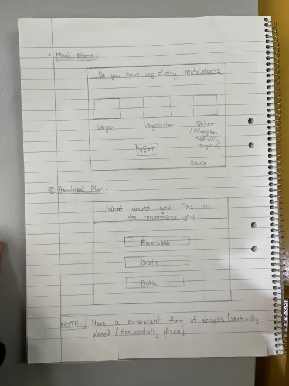
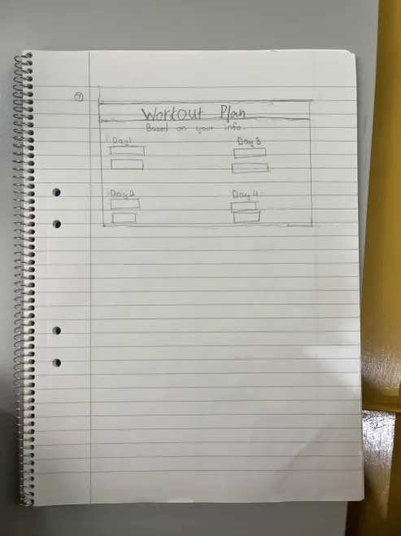
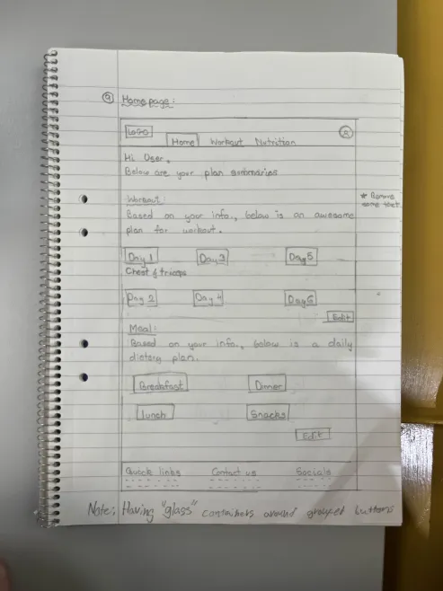
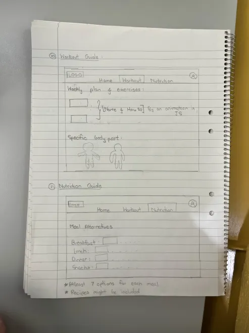
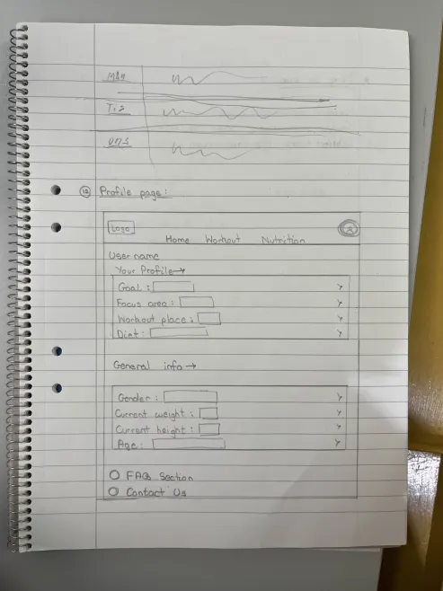
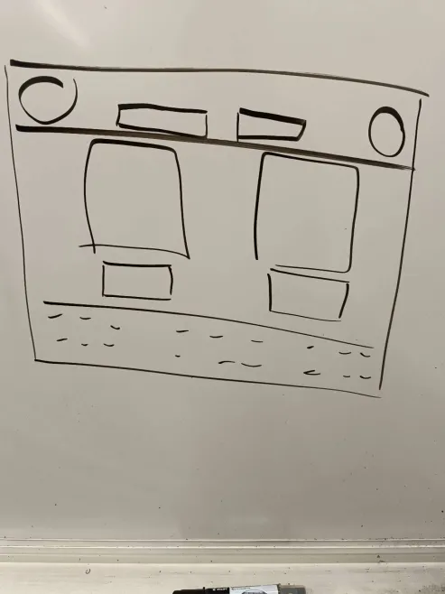
High-Fidelity Prototype
Once the wireframes were validated, we designed high-fidelity prototypes in Figma using a clean, energetic color palette that aligns with health and motivation. We used components for consistency and included interactive elements like toggles for workout types, animations for goal achievements, and responsive charts for progress tracking. UI elements were optimized for mobile usability, with large tap targets and readable fonts. Accessibility guidelines were followed closely to support colorblind users and screen readers.

Usability Testing
We tested the prototype with 6 participants across different fitness levels. Each user was given tasks such as "Set a weekly step goal" and "Start a workout from the home screen." Feedback revealed that users loved the progress tracker but wanted more clarity in the icons and simpler onboarding steps. One key insight was that beginner users hesitated to commit to goals unless they saw an example or tutorial. These insights led to further design refinement.
Final Iterations
In the final iteration, we simplified the onboarding by adding a quick-start option, clarified iconography with labels, and introduced an in-app coach character for encouragement. We also integrated feedback into the progress tracker by showing weekly streaks and reward badges to improve user motivation. The final design offered a blend of usability, visual appeal, and motivational tools—crafted for users trying to make fitness a consistent part of their daily lives.